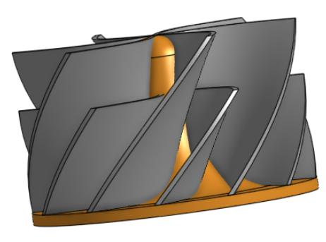
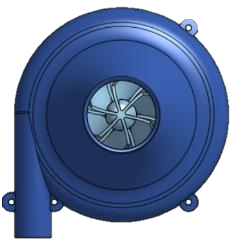
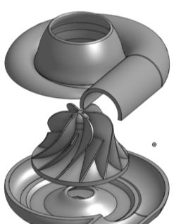
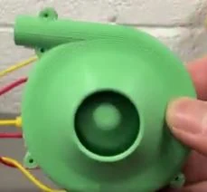

Work / Mechanical Design & Product Development, Simulation, CFD & Optimization
3D-printed centrifugal compressor
A personal project that closes the loop between CAD, CFD, and hardware: design a parametric impeller, predict its flow, print it, and measure how far reality lands from the prediction.
- Organization
- Personal project
- Role
- Design, simulation, and testing
- Dates
- October 2024 – January 2025
- Status
- Complete
- Category
- Mechanical Design & Product Development, Simulation, CFD & Optimization
Key results
24.55 CFM
Predicted volumetric flow rate from the ANSYS Fluent simulation
Simulated
within ±20%
Measured airflow against the predicted flow, using an anemometer
Measured
- Simulated
- Output of a simulation, not a physical test.
- Measured
- Instrument reading from a test or inspection.
Problem and constraints
The compressor had to fit within its housing, targeting a 50 mm diameter at 10,000 RPM. Each blade's geometry depends on its neighbors, so a change to one blade ripples through the whole impeller.
Approach: equation-based blades
Rather than sketching blades by hand, I defined them with equations. Varying the degree of power of a spline changes the blade shape, and the complexity of the model is set by the formula and technique used. The result is a parameterizable model that can be re-driven after each simulation.



Simulation feedback
ANSYS Fluent simulations calculated the volumetric flow rate and visualized vortices within the volute, showing fluid stagnation and churning. Those results went back into CAD: I manipulated the design variables and resolved flaws in the parameterizable model.



Design decisions and trade-offs
- Refining the blade equation improved geometric control, with a minor effect on performance.
- Reviewing the model exposed design constraints I had not captured: zero-thickness geometry, conditions that cannot be manufactured, and insufficient design constraints overall.


Verification
I validated the compressor with an anemometer. Measured airflow was within ±20% of the predicted 24.55 CFM. That is a wide band, and the gap had identifiable causes: excessive shaft friction and PLA deformation, plus dimensional variation and unintended surface friction from 3D printing.


Lessons and next steps
The main lesson was the importance of design for manufacture. Next steps would be functional tolerancing, material selection for the application, and better drafting techniques.
Tools and methods
- SOLIDWORKS
- ANSYS Fluent
- 3D printing in PLA
- Anemometer